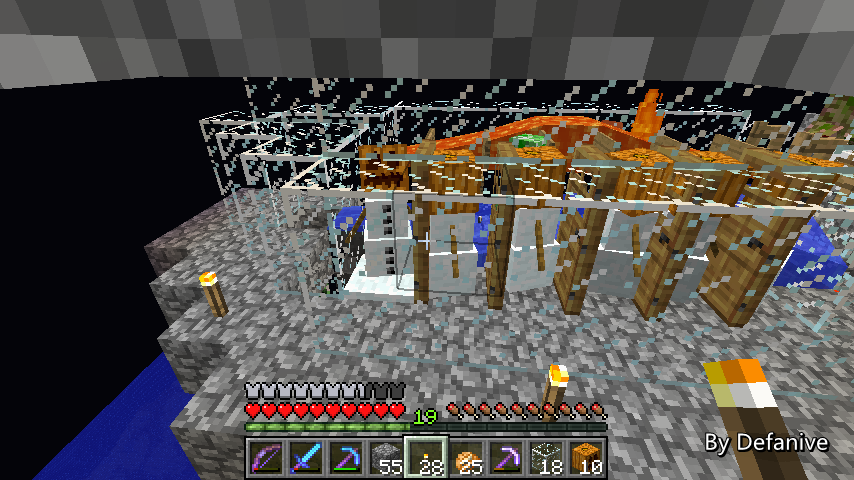
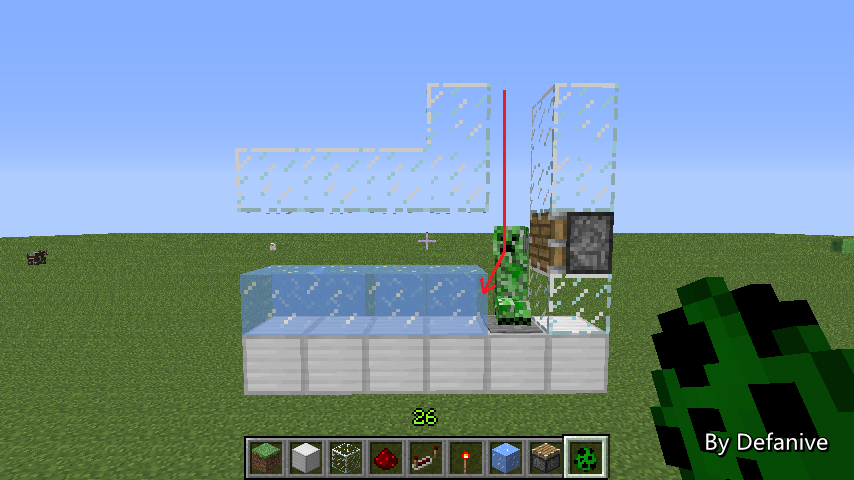

首页
上一页
248
249
250
251
252
253
253
254
255
256
257
258
下一页
末页
defanive2
无尽黑夜
14
这种工程还是不能偷懒的，该造7格就造7格
上一次的爆炸的确是一次教训
——来自 MCLive
18491楼
2013-07-06 21:30
defanive2
无尽黑夜
14
教训就是这种工程是不能偷懒的
该造多长的处理线就造多长
之前没经大脑，认为4格可以跟上速度
结果导致了爆炸
以后还是得认真行事
——来自 MCLive
18492楼
2013-07-06 21:37
defanive2
无尽黑夜
14
接下来放一个循环的怪物下来测试成果
如果没有造错的话，应该是可以正常运作了
PS 这机器在创造里设计出来觉得没问题
结果到生存造就这么蛋疼 = =
——来自 MCLive
18494楼
2013-07-06 21:39
defanive2
无尽黑夜
14
过滤一切正常
——来自 MCLive

18496楼
2013-07-06 21:40
defanive2
无尽黑夜
14
基本没有什么问题，运行非常稳定
果然是不能偷工减料啊 = =
豆腐渣工程不可直视
——来自 MCLive
18497楼
2013-07-06 21:41
defanive2
无尽黑夜
14
苦力怕被分离出来，目前都没有什么问题
暂时只是把这些苦力怕扔到海里而已 = =
——来自 MCLive
18498楼
2013-07-06 21:42
defanive2
无尽黑夜
14
运行都很顺畅，基本没有问题了
今天是稍微短暂的直播，明天再见吧
一天完成一小部分
很快整个工程就可以完工了
——来自 MCLive
18500楼
2013-07-06 21:46
defanive2
无尽黑夜
14
今天我们又来直播啦！
虽然这次直播又有点晚，不过MC还是得打的
——来自 MCLive
18527楼
2013-07-07 23:12
defanive2
无尽黑夜
14
还是没有更新161，仍然留守152中
不过Optifine的开发已经到92%了
预计明天或者后天就可以更新到1.6.1了！
PS Optifine的作者实在是非常给力
昨天才70%的，今天就到92%了
——来自 MCLive
18528楼
2013-07-07 23:16
defanive2
无尽黑夜
14
昨天把刷怪塔的分离装置做好之后
就开始挂机测试装置的稳定性
结果挂机15分钟之后发生了一次爆炸
于是刚刚一直都在致力解决这个问题
重建过程实在是蛋疼无比 = =
——来自 MCLive
18529楼
2013-07-07 23:19
defanive2
无尽黑夜
14
这个是昨天晚上的设计的截面图
（在这里水流用冰块表示，从右往左流动）
问题就出在掉落伤害上
——来自 MCLive
18534楼
2013-07-07 23:22
defanive2
无尽黑夜
14
如果有2只怪物间隔很低的掉落时
有时第一只怪物会靠右侧，而第二只靠左侧
那么第一只落地之后，在活塞还没启动前
第二只怪物落下就会被直接撞到水里
躲开了掉落伤害
——来自 MCLive

18538楼
2013-07-07 23:28
defanive2
无尽黑夜
14
如果第二只怪物正好是苦力怕的话
这个时候雪人如果误射了，那么苦力怕就会在死亡前爆炸
虽然只会在3个低概率事件都同时发生时才会爆炸
但是在长期挂机的情况下，是很危险的
因此这个问题是必须得解决的
——来自 MCLive
18539楼
2013-07-07 23:30
defanive2
无尽黑夜
14
最后的解决方法就是再加一个活塞装置
这样怪物落下在右边的活塞
即使被互相推挤导致位移到左侧
那么也会受到掉落伤害
这样就保证了整个装置的稳定性
——来自 MCLive
18541楼
2013-07-07 23:33
defanive2
无尽黑夜
14
之前爆炸导致了一定的悲剧，而且装置也需要位移
于是刚才把整个装置都拆了重新建造
挂机了大约一个小时仍然稳定工作
所以基本上可以确定现在非常稳定了
——来自 MCLive
18542楼
2013-07-07 23:37
defanive2
无尽黑夜
14
现在分离装置已经完成了
接下来下一步就是要做开启/关闭分离装置的开关
最初的设计是在进入分离装置前进行转移
不过由于那个设计缩短了处理线的长度
所以说必须得放弃
那么现在就要想办法开启/关闭分离装置
——来自 MCLive
18543楼
2013-07-07 23:40
defanive2
无尽黑夜
14
先回家取点材料
——来自 MCLive
18544楼
2013-07-07 23:42
defanive2
无尽黑夜
14
另外一个需要解决的问题就是地狱门的设置
虽然说可以从刷怪塔的地狱门去到刷怪塔
但是是从猪人塔的地狱门里出来
晚点得把这个映射关系给修正了
——来自 MCLive
18545楼
2013-07-07 23:43
defanive2
无尽黑夜
14
一些粘性活塞是需要的
——来自 MCLive
18547楼
2013-07-07 23:45
defanive2
无尽黑夜
14
回到刷怪塔
要实现不分离其实很简单
只需要把雪人的视线遮掉即可
这样怪物就会直穿分离器
——来自 MCLive
18550楼
2013-07-07 23:58
defanive2
无尽黑夜
14
实现起来也比较简单
只需要把这排方块下推即可
——来自 MCLive
18551楼
2013-07-07 23:59
defanive2
无尽黑夜
14
也就是需要控制这一排玻璃
造一排向下的粘性活塞控制即可
——来自 MCLive
18552楼
2013-07-08 00:00
defanive2
无尽黑夜
14
这样造好活塞之后
向下时就会阻挡雪人的视线
不再进行过滤
——来自 MCLive
18553楼
2013-07-08 00:05
defanive2
无尽黑夜
14
于是所有的怪物都能通过分离器了
——来自 MCLive
18554楼
2013-07-08 00:07
defanive2
无尽黑夜
14
虽然有时候还是会被挤到岩浆里被烧死
但是数量不多，绝大部分都存活下来
可控分离器这一部分算是完成了
——来自 MCLive
18555楼
2013-07-08 00:08
defanive2
无尽黑夜
14
接下来我们要开始做刷怪塔的美观工程了
现在打算做2个怪物出口
A口是只有苦力怕的，另外一个B口是全部怪物的
当我们选择苦力怕模式的时候，分离器工作，苦力怕到A口
选择全部怪物模式的时候，分离器停止工作，怪物到B口
以及另外一个杀死模式，自动摔死全部怪物，不出口怪物
还有一个模式，暂时先不透露作用
——来自 MCLive
18557楼
2013-07-08 00:16
defanive2
无尽黑夜
14
这里就是我们刷怪塔的正中间
那么左边将会是A口，而右边会是B口
——来自 MCLive
18558楼
2013-07-08 00:20
defanive2
无尽黑夜
14
不过貌似水流设置有点困难
普通火把是怪物的下落口
而两个红石火把则是A口和B口
——来自 MCLive
18559楼
2013-07-08 00:27
defanive2
无尽黑夜
14
最后决定把水流往下一层处理
玻璃是怪物的下落点
然后沿着火把的2条水路分别送往A口和B口
通过活塞控制水路即可
——来自 MCLive
18565楼
2013-07-08 00:38
defanive2
无尽黑夜
14
最后的水流设置就是这样
——来自 MCLive
18566楼
2013-07-08 00:41
首页
上一页
248
249
250
251
252
253
253
254
255
256
257
258
下一页
末页